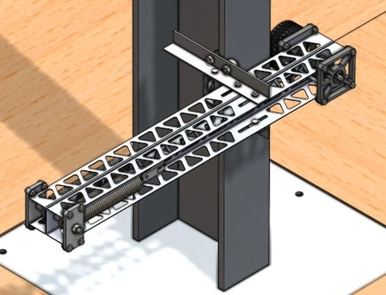
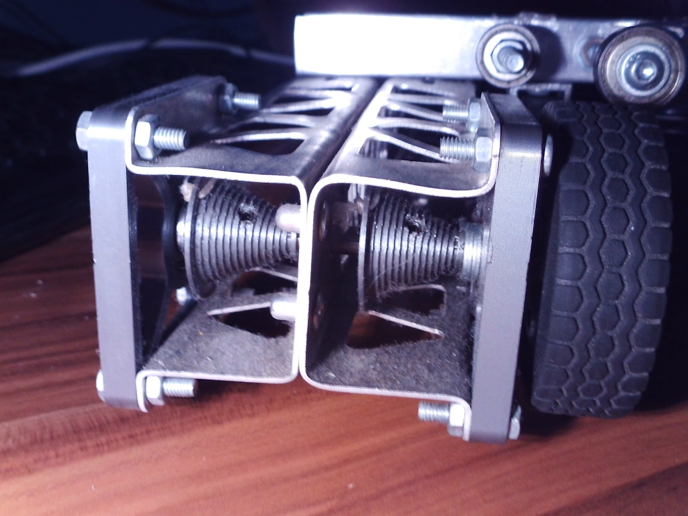

Klauteraar
Omschrijving
Dit project kreeg de naam 'klauteraar' omdat de opdracht was om een mechanisme te ontwerpen dat zo hoog mogelijk langs een paal omhoog kon klimmen. De uitdaging hierbij was dat als energiebron alleen een paar aangeleverde veren gebruikt mocht worden. Het mechanisme moest deze beperkte energie om zetten in een zo groot mogelijke hoogte. Om het gewicht te minimaliseren zijn zo min mogelijk onderdelen gebruikt; De structuur van de klauteraar wordt gevormd door een gevouwen aluminium profiel waar zo veel mogelijk materiaal uit weggesneden is. Dit profiel vangt de krachten van de veren op, en vormt tegelijkertijd het montagepunt van de wielen die het apparaat omhoog moeten geleiden. De overbrenging is simpel, maar doordacht. De veren trekken aan een touw die als katrol om het uiteinde van de veer heen zijn gewikkeld, en aan het andere uiteinde bevindt zich een conische lier. Dit zorgt er voor dat de kracht die de veer op het aandrijfwiel uitoefent ongeveer gelijk blijft terwijl de veer zich energie afgeeft.

